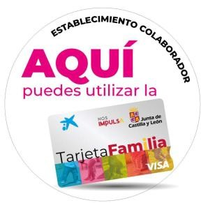

ما الذي يمكن شراؤه وأين
البطاقة مخصّصة للنفقات الأساسية لرعاية أطفالك، في متاجر قشتالة وليون.
ما الذي يمكن شراؤه
- أغذية الرضّع والأطفالالحليب، والأغذية المهروسة، والحبوب…
- الحفاضات ومنتجات النظافة
- ملابس الأطفال وإكسسواراتهم
- منتجات الصيدلية والأجهزة التقويمية
- منتجات أخرى لرعاية الأطفال
استخدمها لهذا الغرض فقط. إذا استُخدمت لمشتريات أخرى، يمكن لحكومة الإقليم أن تطالب بإعادة المنحة.
أين يمكن استخدامها
في المتاجر الفعلية في قشتالة وليون، وهي نوعان:
- المتاجر المتعاونة. انضمت طوعًا، وعادة تضع على واجهتها ملصق «AQUÍ puedes utilizar la Tarjeta Familia» (هنا يمكنك استخدام بطاقة الأسرة). عددها حاليًا 1,623.
ابحث عن المتاجر المتعاونة القريبة منك - أي متجر آخر من الأنشطة التجارية المسموح بها (الصيدليات، والنظارات، والسوبرماركت، والمواد الغذائية، ومستلزمات الرضّع، وملابس الأطفال…)، حتى لو لم يكن متعاونًا. المهم هو نوع النشاط المسجّل عليه جهاز الدفع في المتجر.
عرض الأنشطة التجارية المسموح بها

احتفظ بالإيصالات 6 أشهر
احتفظ بإيصال أو فاتورة كل عملية شراء لمدة 6 أشهر من تاريخ الدفع، مع تفصيل المنتجات. يمكن للإدارة أن تطلبها في أي وقت للتحقق من أن المال أُنفق في الغرض المخصّص له.
نصيحة عملية: صوّر الإيصال بهاتفك عند خروجك من المتجر، فالورق الحراري يبهت مع الوقت.